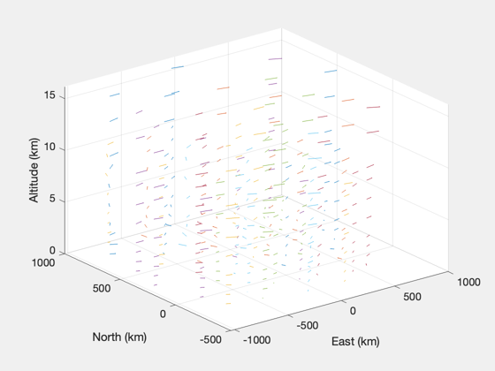

Demonstrates NOAA Wind Model for obtaining wind data and plotting it.
------------------------------------------------------------------------
See also NOAAWindData, MergeNOAAWindData, PlotWindField
------------------------------------------------------------------------
Contents
load city lat/lon data
fprintf(1,'Load city lat/lon data...\n')
latLonData = load('CityLatLonData.mat');
Load city lat/lon data...
load current NOAA wind data from the web
fprintf(1,'Load low-altitude wind data for Chicago region from NOAA website...\n')
dataLo = NOAAWindData( 'chicago', 'low', latLonData );
fprintf(1,'Load high-altitude wind data for Chicago region from NOAA website...\n')
dataHi = NOAAWindData( 'chicago', 'high', latLonData );
fprintf(1,'Merge low and high altitude wind data into single structure...\n')
data = MergeNOAAWindData( dataLo, dataHi );
Load low-altitude wind data for Chicago region from NOAA website...
Load high-altitude wind data for Chicago region from NOAA website...
Merge low and high altitude wind data into single structure...
plot the wind field
fprintf(1,'Plot the 3D wind field.\n')
altRange = [0 20];
fig = PlotWindField( data, altRange );
Plot the 3D wind field.
